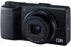

器材库 > 不可换镜头数码相机 > GR

规格总览
发布日期
2013-04-17
厂家推荐价格
99,800.00 （日元）
影像规格
影像传感器
CMOS
影像传感器尺寸
23.7×15.7mm
总像素
1690万
有效像素
1620万
影像处理器
GR ENGINE V
静态图像尺寸
【3:2】4928×3264(L)、3936×2608(M)、2912×1936(S)、1280×864(XS)；【4:3】4352×3264(L)、3488×2608(M)、2592×1936(S)、1152×864(XS)；【1:1】3264×3264(L)、2608×2608(M)、1936×1936(S)、864×864(XS)
静态图像格式
JPEG, RAW
画幅比
3:2, 4:3, 1:1
短片尺寸
1920×1080、1280×720、640×480
短片格式
MPEG4-AVC/H.264
短片音效
无指向性立体声麦克风
镜头和对焦
镜头结构
7片/5组
非球面镜片
2片
低/超低色散镜片
1片
焦距
18mm
等效35mm画幅焦距
28mm
最大光圈
f2.8-f/16
最近对焦距离
10cm
AF辅助灯
有
手动对焦
支持
曝光控制
测光模式
中央重点测光, 多分区评价测光, 点测光
曝光模式
P（程序自动曝光）, B门, A（光圈优先自动曝光）, S（快门速度优先自动曝光）, M（手动测光曝光）
快门速度
1/4000～300秒
曝光补偿
±2EV以1/3EV、1/2EVEV级调整
ISO感光度
100, 自动, 25600
白平衡
多云, 色温调节, 阴天, 阴影, 自动, 日光灯, 预设白平衡, 手动, 户外, 日光色FL, 荧光灯（冷白色）, 荧光灯（日光白色）, 荧光灯（日光）, 荧光灯（暖白色）
自拍
10秒, 2秒
连拍
4张/秒
闪光灯
内置闪光灯
弹出式
闪光模式
慢速同步, 减轻/消除红眼, 强制闪光, 手动, 减轻红眼慢速同步, 红眼修复
闪光涵盖范围
0.2m～3.0m（ISO AUTO）
取景规格
LCD类型
TFT LCD
LCD尺寸
3.0英寸
LCD像素
123万
文件输入/输出
存储卡
SD/SDHC, SDXC
数据接口
USB
视频/音频接口
AV 输出
电源
电池
DB-65
续航能力
290张
外观
颜色
黑色
尺寸
117×61×34.7mm
重量
245g
其它
备注
支持Eye-Fi无线存储卡
柒郎2015-09-09 21:074.63 分
操作性 5.00功能性 5.00美观性 5.00趣味性 5.00耐用性 4.00性价比 5.00解像力 4.00色彩还原 4.00
透明主唱2015-07-28 03:074.81 分
操作性 5.00功能性 5.00美观性 4.50趣味性 5.00耐用性 5.00性价比 5.00解像力 4.50色彩还原 4.50
散客2015-05-21 15:564.19 分
操作性 4.50功能性 4.50美观性 4.00趣味性 4.00耐用性 4.50性价比 4.50解像力 4.50色彩还原 3.00
UVfilter2014-10-07 20:214.63 分
操作性 5.00功能性 4.50美观性 5.00趣味性 5.00耐用性 4.00性价比 4.50解像力 4.50色彩还原 4.50
gavinworld2014-09-04 17:294.75 分
操作性 5.00功能性 5.00美观性 5.00趣味性 5.00耐用性 4.00性价比 5.00解像力 4.50色彩还原 4.50
vangao2014-06-28 14:104.69 分
操作性 5.00功能性 5.00美观性 5.00趣味性 5.00耐用性 4.50性价比 4.50解像力 4.50色彩还原 4.00
威马2014-05-08 23:485 分
操作性 5.00功能性 5.00美观性 5.00趣味性 5.00耐用性 5.00性价比 5.00解像力 5.00色彩还原 5.00
梵若Vanrol2014-03-04 09:235 分
操作性 5.00功能性 5.00美观性 5.00趣味性 5.00耐用性 5.00性价比 5.00解像力 5.00色彩还原 5.00
孤鸿台2014-02-11 20:265 分
操作性 5.00功能性 5.00美观性 5.00趣味性 5.00耐用性 5.00性价比 5.00解像力 5.00色彩还原 5.00
sunstarsun2013-12-30 23:214.88 分
操作性 5.00功能性 5.00美观性 5.00趣味性 4.00耐用性 5.00性价比 5.00解像力 5.00色彩还原 5.00
starx2013-07-05 19:485 分
操作性 5.00功能性 5.00美观性 5.00趣味性 5.00耐用性 5.00性价比 5.00解像力 5.00色彩还原 5.00
starx2013-07-05 19:24
产品图 / 样片
评测 / 相关文章
- 详细内容 （存档）
- 后发制人 理光GR便携相机评测 （存档）
- ［试用］RICOH GR 定格那一刻 （存档）
- ［试用］理光GR，忘掉手中的相机 （存档）
- ［试用］大底DC 理光GR开箱 （存档）
- ［试用］理光GR开箱及样张 （存档）
- ［试用］理光GR入手试机 （存档）
- ［试用］大底口袋机 理光GR海外评测 （存档）
- ［资讯］GR DIGITAL系列新作 理光GR图赏 （存档）
- ［资讯］理光GR官方样片欣赏 （存档）
相关文章
- ［试用］玩爆黑白 颠覆江南小清新的GR作品 （原站已下线）
- ［试用］RICOH GR 定格那一刻 （存档）
- ［试用］理光GR，忘掉手中的相机 （存档）
- ［试用］后发制人 理光GR便携相机评测 （存档）
- ［试用］大底DC 理光GR开箱 （存档）
- ［试用］理光GR开箱及样张 （存档）
- ［试用］理光GR入手试机 （存档）
- ［试用］大底口袋机 理光GR海外评测 （存档）
- ［资讯］GR DIGITAL系列新作 理光GR图赏 （存档）
- ［资讯］理光GR （存档）
- ［资讯］理光GR官方样片欣赏 （存档）